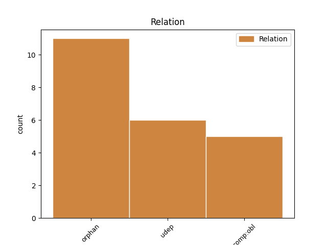
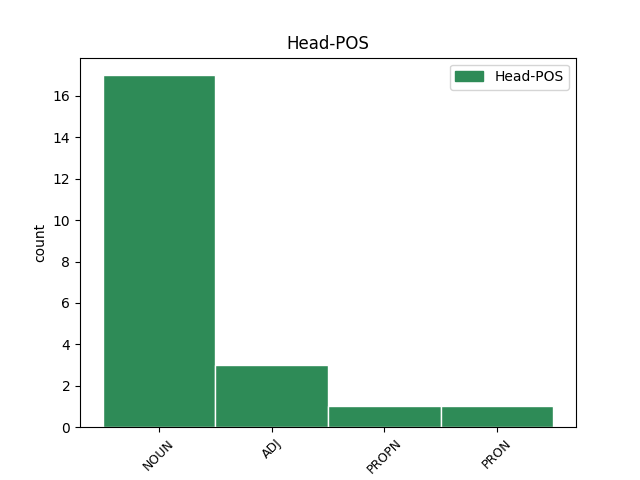
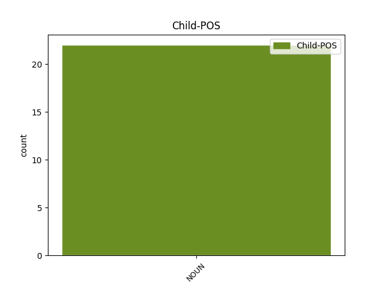

Distribution of features within this leaf



Agreement Rules sorted by frequency.
- When the dependent token is the underspecified dependency(udep) of the head token, and the head token is NOUN and the dependent token is NOUN.
1 Например _ _ _ _ 0 _ _ _
2 , _ _ _ _ 0 _ _ _
3 можно _ _ _ _ 0 _ _ _
4 чуть _ _ _ _ 0 _ _ _
5 более _ _ _ _ 0 _ _ _
6 сильным _ _ _ _ 0 _ _ _
7 нажатием _ _ _ _ 0 _ _ _
8 можно _ _ _ _ 0 _ _ _
9 разблокировать _ _ _ _ 0 _ _ _
10 смартфон _ _ _ _ 0 _ _ _
11 или _ _ _ _ 0 _ _ _
12 добавить _ _ _ _ 0 _ _ _
13 в _ _ _ _ 0 _ _ _
14 интерфейс _ _ _ _ 0 _ _ _
15 устройства _ _ _ _ 0 _ _ _
16 дополнительные _ _ _ _ 0 _ _ _
17 команды _ _ _ _ 0 _ _ _
18 , _ _ _ _ 0 _ _ _
19 аналогичные _ _ _ _ 0 _ _ _
20 нажатию _ _ _ _ 0 _ _ _
21 правой _ _ _ _ 0 _ _ _
22 кнопки кнопка NOUN _ Animacy=Inan|Case=Gen|Gender=Fem|Number=Sing 0 _ _ _
23 мыши мышь NOUN _ Animacy=Inan|Case=Gen|Gender=Fem|Number=Sing 22 udep _ SpaceAfter=No
24 . _ _ _ _ 0 _ _ _
1 4 _ _ _ _ 0 _ _ _
2 . _ _ _ _ 0 _ _ _
3 Получаешь _ _ _ _ 0 _ _ _
4 свои _ _ _ _ 0 _ _ _
5 20 _ _ _ _ 0 _ _ _
6 евро _ _ _ _ 0 _ _ _
7 на _ _ _ _ 0 _ _ _
8 счет _ _ _ _ 0 _ _ _
9 , _ _ _ _ 0 _ _ _
10 а _ _ _ _ 0 _ _ _
11 Павлик Павлик PROPN _ Animacy=Anim|Case=Nom|Gender=Masc|Number=Sing 0 _ _ _
12 — _ _ _ _ 0 _ _ _
13 бонус бонус NOUN _ Animacy=Inan|Case=Nom|Gender=Masc|Number=Sing 11 orphan _ _
14 за _ _ _ _ 0 _ _ _
15 приглашенного _ _ _ _ 0 _ _ _
16 друга _ _ _ _ 0 _ _ _
17 и _ _ _ _ 0 _ _ _
18 скидку _ _ _ _ 0 _ _ _
19 на _ _ _ _ 0 _ _ _
20 билет _ _ _ _ 0 _ _ _
21 в _ _ _ _ 0 _ _ _
22 Сомали _ _ _ _ 0 _ _ _
23 . _ _ _ _ 0 _ _ _
1 Надежды _ _ _ _ 0 _ _ _
2 все _ _ _ _ 0 _ _ _
3 умрут _ _ _ _ 0 _ _ _
4 когда _ _ _ _ 0 _ _ _
5 угаснет _ _ _ _ 0 _ _ _
6 день _ _ _ _ 0 _ _ _
7 И _ _ _ _ 0 _ _ _
8 я _ _ _ _ 0 _ _ _
9 иду _ _ _ _ 0 _ _ _
10 бегу _ _ _ _ 0 _ _ _
11 о _ _ _ _ 0 _ _ _
12 день _ _ _ _ 0 _ _ _
13 заря _ _ _ _ 0 _ _ _
14 рыжуха _ _ _ _ 0 _ _ _
15 Закрыла _ _ _ _ 0 _ _ _
16 пристальный _ _ _ _ 0 _ _ _
17 как _ _ _ _ 0 _ _ _
18 лалы _ _ _ _ 0 _ _ _
19 алый _ _ _ _ 0 _ _ _
20 взор _ _ _ _ 0 _ _ _
21 Сова сова NOUN NOUN Animacy=Anim|Case=Nom|Gender=Fem|Number=Sing 23 orphan _ _
22 овечий _ _ _ _ 0 _ _ _
23 взгляд взгляд NOUN NOUN Animacy=Inan|Case=Nom|Gender=Masc|Number=Sing 0 _ _ _
24 направленный _ _ _ _ 0 _ _ _
25 в _ _ _ _ 0 _ _ _
26 упор _ _ _ _ 0 _ _ _
Disagree Examples:
1 Мы _ _ _ _ 0 _ _ _
2 склонны _ _ _ _ 0 _ _ _
3 объяснять _ _ _ _ 0 _ _ _
4 поведение _ _ _ _ 0 _ _ _
5 других _ _ _ _ 0 _ _ _
6 людей _ _ _ _ 0 _ _ _
7 их _ _ _ _ 0 _ _ _
8 личностными _ _ _ _ 0 _ _ _
9 качествами _ _ _ _ 0 _ _ _
10 , _ _ _ _ 0 _ _ _
11 а _ _ _ _ 0 _ _ _
12 свои _ _ _ _ 0 _ _ _
13 поступки поступок NOUN _ Animacy=Inan|Case=Acc|Gender=Masc|Number=Plur 0 _ _ _
14 — _ _ _ _ 0 _ _ _
15 объективными _ _ _ _ 0 _ _ _
16 обстоятельствами обстоятельство NOUN _ Animacy=Inan|Case=Ins|Gender=Neut|Number=Plur 13 orphan _ SpaceAfter=No
17 , _ _ _ _ 0 _ _ _
18 особенно _ _ _ _ 0 _ _ _
19 , _ _ _ _ 0 _ _ _
20 если _ _ _ _ 0 _ _ _
21 речь _ _ _ _ 0 _ _ _
22 идет _ _ _ _ 0 _ _ _
23 о _ _ _ _ 0 _ _ _
24 каких-то _ _ _ _ 0 _ _ _
25 промахах _ _ _ _ 0 _ _ _
26 . _ _ _ _ 0 _ _ _
1 Чтобы _ _ _ _ 0 _ _ _
2 вёрсты _ _ _ _ 0 _ _ _
3 не _ _ _ _ 0 _ _ _
4 мерить _ _ _ _ 0 _ _ _
5 и _ _ _ _ 0 _ _ _
6 Судьбе _ _ _ _ 0 _ _ _
7 не _ _ _ _ 0 _ _ _
8 пенять _ _ _ _ 0 _ _ _
9 , _ _ _ _ 0 _ _ _
10 Мне _ _ _ _ 0 _ _ _
11 довольно _ _ _ _ 0 _ _ _
12 поверить _ _ _ _ 0 _ _ _
13 и _ _ _ _ 0 _ _ _
14 взаправду _ _ _ _ 0 _ _ _
15 понять _ _ _ _ 0 _ _ _
16 , _ _ _ _ 0 _ _ _
17 — _ _ _ _ 0 _ _ _
18 За _ _ _ _ 0 _ _ _
19 неведомой _ _ _ _ 0 _ _ _
20 далью _ _ _ _ 0 _ _ _
21 в _ _ _ _ 0 _ _ _
22 чужеземном _ _ _ _ 0 _ _ _
23 лесу _ _ _ _ 0 _ _ _
24 Блещет _ _ _ _ 0 _ _ _
25 таволга таволга NOUN _ Animacy=Inan|Case=Nom|Gender=Fem|Number=Sing 0 _ _ _
26 сталью сталь NOUN _ Animacy=Inan|Case=Ins|Gender=Fem|Number=Sing 25 udep _ _
27 на _ _ _ _ 0 _ _ _
28 озерном _ _ _ _ 0 _ _ _
29 плесу _ _ _ _ 0 _ _ _
30 , _ _ _ _ 0 _ _ _
31 Слышны _ _ _ _ 0 _ _ _
32 тайные _ _ _ _ 0 _ _ _
33 клики _ _ _ _ 0 _ _ _
34 , _ _ _ _ 0 _ _ _
35 звон _ _ _ _ 0 _ _ _
36 нездешних _ _ _ _ 0 _ _ _
37 мечей _ _ _ _ 0 _ _ _
38 , _ _ _ _ 0 _ _ _
39 Из _ _ _ _ 0 _ _ _
40 камней _ _ _ _ 0 _ _ _
41 среброликих _ _ _ _ 0 _ _ _
42 бьет _ _ _ _ 0 _ _ _
43 упрямый _ _ _ _ 0 _ _ _
44 ручей _ _ _ _ 0 _ _ _
45 , _ _ _ _ 0 _ _ _
46 Со _ _ _ _ 0 _ _ _
47 слезами _ _ _ _ 0 _ _ _
48 не _ _ _ _ 0 _ _ _
49 смешан _ _ _ _ 0 _ _ _
50 , _ _ _ _ 0 _ _ _
51 Высшей _ _ _ _ 0 _ _ _
52 силой _ _ _ _ 0 _ _ _
53 храним _ _ _ _ 0 _ _ _
54 . _ _ _ _ 0 _ _ _
1 Взрослым взрослый NOUN _ Animacy=Anim|Case=Dat|Gender=Masc|Number=Plur 9 orphan _ _
2 и _ _ _ _ 0 _ _ _
3 детям _ _ _ _ 0 _ _ _
4 старше _ _ _ _ 0 _ _ _
5 12 _ _ _ _ 0 _ _ _
6 лет _ _ _ _ 0 _ _ _
7 – _ _ _ _ 0 _ _ _
8 2 _ _ _ _ 0 _ _ _
9 мл миллилитр NOUN _ Animacy=Inan|Case=Nom|Gender=Masc|Number=Sing 0 _ _ _
10 ( _ _ _ _ 0 _ _ _
11 40 _ _ _ _ 0 _ _ _
12 капель _ _ _ _ 0 _ _ _
13 ) _ _ _ _ 0 _ _ _
14 препарата _ _ _ _ 0 _ _ _
15 на _ _ _ _ 0 _ _ _
16 1 _ _ _ _ 0 _ _ _
17 ингаляцию _ _ _ _ 0 _ _ _
18 , _ _ _ _ 0 _ _ _
19 до _ _ _ _ 0 _ _ _
20 4 _ _ _ _ 0 _ _ _
21 раз _ _ _ _ 0 _ _ _
22 в _ _ _ _ 0 _ _ _
23 день _ _ _ _ 0 _ _ _
1 Детям ребенок NOUN _ Animacy=Anim|Case=Dat|Gender=Masc|Number=Plur 7 orphan _ _
2 до _ _ _ _ 0 _ _ _
3 6 _ _ _ _ 0 _ _ _
4 лет _ _ _ _ 0 _ _ _
5 – _ _ _ _ 0 _ _ _
6 0,5 _ _ _ _ 0 _ _ _
7 мл миллилитр NOUN _ Animacy=Inan|Case=Nom|Gender=Masc|Number=Sing 0 _ _ _
8 ( _ _ _ _ 0 _ _ _
9 10 _ _ _ _ 0 _ _ _
10 капель _ _ _ _ 0 _ _ _
11 ) _ _ _ _ 0 _ _ _
12 препарата _ _ _ _ 0 _ _ _
13 на _ _ _ _ 0 _ _ _
14 1 _ _ _ _ 0 _ _ _
15 ингаляцию _ _ _ _ 0 _ _ _
16 , _ _ _ _ 0 _ _ _
17 до _ _ _ _ 0 _ _ _
18 3 _ _ _ _ 0 _ _ _
19 раз _ _ _ _ 0 _ _ _
20 в _ _ _ _ 0 _ _ _
21 день _ _ _ _ 0 _ _ _
1 Детям ребенок NOUN _ Animacy=Anim|Case=Dat|Gender=Masc|Number=Plur 18 orphan _ _
2 6 _ _ _ _ 0 _ _ _
3 – _ _ _ _ 0 _ _ _
4 12 _ _ _ _ 0 _ _ _
5 лет _ _ _ _ 0 _ _ _
6 ( _ _ _ _ 0 _ _ _
7 масса _ _ _ _ 0 _ _ _
8 тела _ _ _ _ 0 _ _ _
9 22 _ _ _ _ 0 _ _ _
10 – _ _ _ _ 0 _ _ _
11 36 _ _ _ _ 0 _ _ _
12 кг _ _ _ _ 0 _ _ _
13 ) _ _ _ _ 0 _ _ _
14 – _ _ _ _ 0 _ _ _
15 0,25 _ _ _ _ 0 _ _ _
16 - _ _ _ _ 0 _ _ _
17 0,5 _ _ _ _ 0 _ _ _
18 мл миллилитр NOUN _ Animacy=Inan|Case=Nom|Gender=Masc|Number=Sing 0 _ _ _
19 ( _ _ _ _ 0 _ _ _
20 0,25 _ _ _ _ 0 _ _ _
21 - _ _ _ _ 0 _ _ _
22 0,5 _ _ _ _ 0 _ _ _
23 мг _ _ _ _ 0 _ _ _
24 – _ _ _ _ 0 _ _ _
25 5 _ _ _ _ 0 _ _ _
26 - _ _ _ _ 0 _ _ _
27 10 _ _ _ _ 0 _ _ _
28 капель _ _ _ _ 0 _ _ _
29 ) _ _ _ _ 0 _ _ _
30 , _ _ _ _ 0 _ _ _
31 в _ _ _ _ 0 _ _ _
32 тяжелых _ _ _ _ 0 _ _ _
33 случаях _ _ _ _ 0 _ _ _
34 – _ _ _ _ 0 _ _ _
35 1 _ _ _ _ 0 _ _ _
36 мл _ _ _ _ 0 _ _ _
37 ( _ _ _ _ 0 _ _ _
38 1 _ _ _ _ 0 _ _ _
39 мг _ _ _ _ 0 _ _ _
40 – _ _ _ _ 0 _ _ _
41 20 _ _ _ _ 0 _ _ _
42 капель _ _ _ _ 0 _ _ _
43 ) _ _ _ _ 0 _ _ _